This project implements an advanced medical image analysis system that combines digital image processing techniques with deep learning to achieve highly accurate classification of kidney conditions from CT scan images. Through our comprehensive image processing pipeline and CNN-based classification model, we achieve consistent accuracy above 90% across all four kidney condition classes.
Healthy kidney tissue
90.96% AccuracyFluid-filled sacs
91.92% AccuracyAbnormal growth
94.17% AccuracySolid deposits
91.83% Accuracy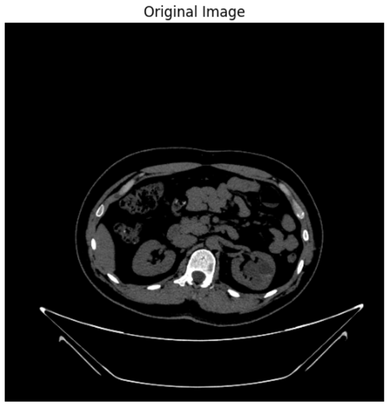
Original CT Scan
Raw CT scan image showing potential cystic formation
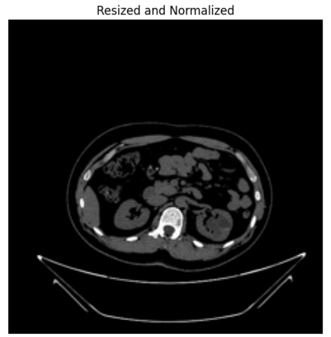
Standardization
Image standardized to 224x224 pixels and normalized to [0,1] range
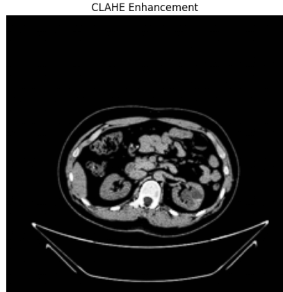
Contrast Enhancement
Enhanced local contrast using CLAHE algorithm
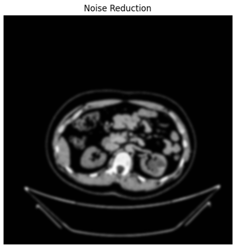
Noise Management
Applied Gaussian blur for noise reduction while preserving edges
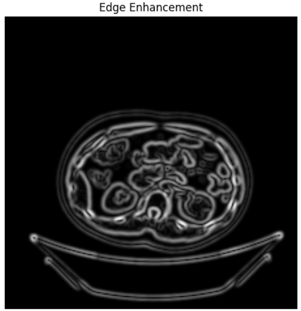
Feature Detection
Enhanced edges using Sobel operator to highlight tissue boundaries
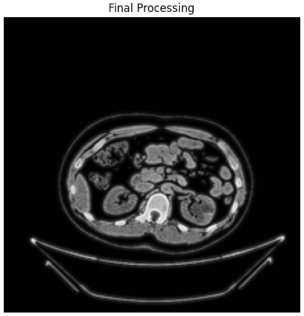
Final Output
Combined enhanced image with weighted edge detection
Model Architecture: ├── Input Layer (224x224x3) ├── Convolutional Blocks │ ├── Block 1: 32 filters │ ├── Block 2: 64 filters │ ├── Block 3: 128 filters │ └── Block 4: 256 filters ├── Dense Layers │ ├── 512 units (ReLU) │ └── 4 units (Softmax) └── Output: 4 classes
| Metric | Training | Validation | Test |
|---|---|---|---|
| Overall Accuracy | 91.04% | 89.92% | 91.93% |
| Class | Training | Validation | Test |
|---|---|---|---|
| Cyst | 90.79% | 89.03% | 91.92% |
| Normal | 90.06% | 88.96% | 90.96% |
| Stone | 91.48% | 93.20% | 91.83% |
| Tumor | 93.37% | 91.52% | 94.17% |
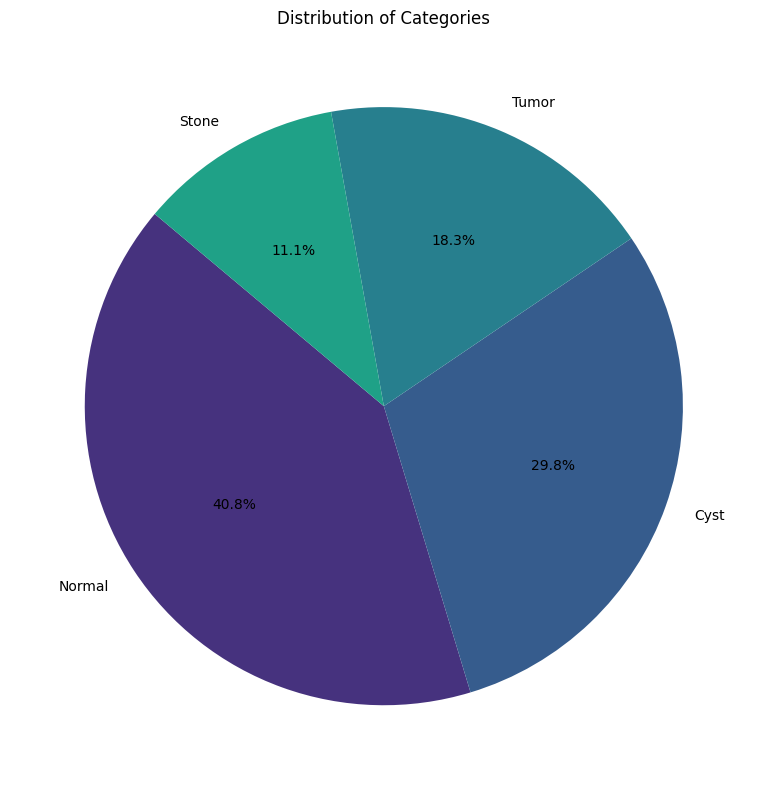
Figure 1: Raw distribution of classes showing number of images per category
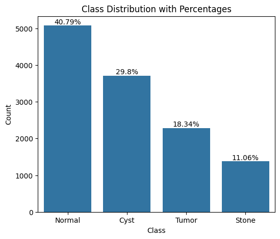
Figure 2: Percentage distribution highlighting class imbalance
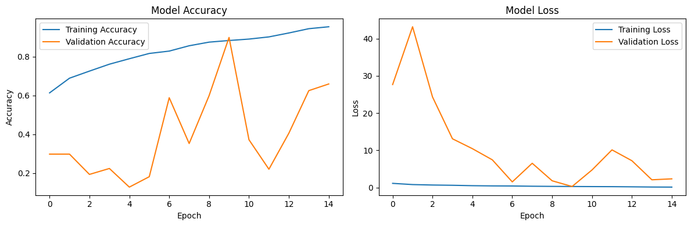
Figure 3: Model training history showing accuracy and loss curves
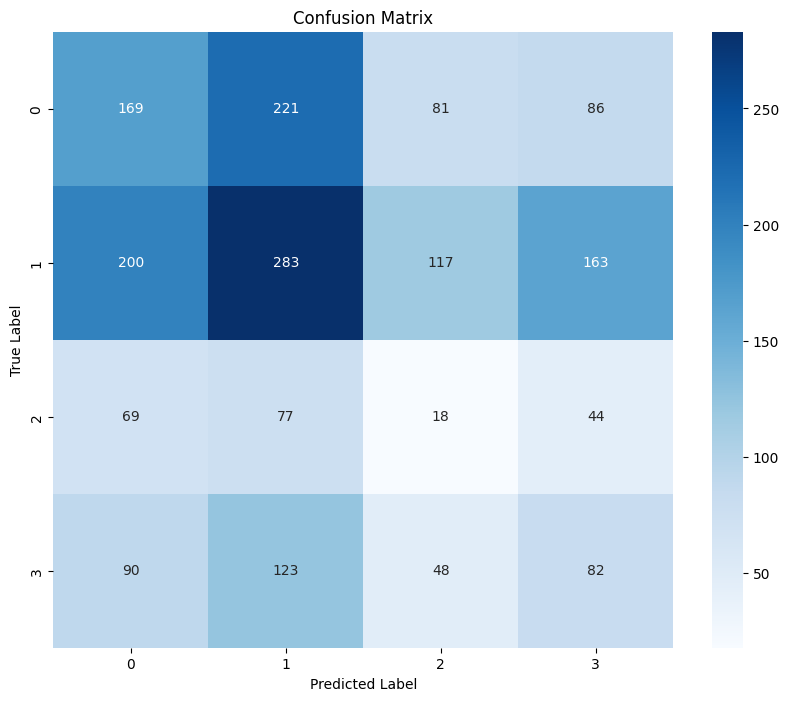
Figure 4: Overall confusion matrix for model evaluation
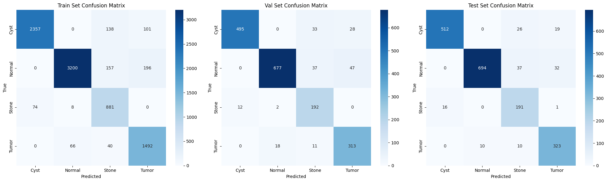
Figure 5: Detailed confusion matrices for train/validation/test sets
Raw CT scan input before processing
224x224 pixels, values scaled to [0,1]
Improved local contrast for better feature visibility
Gaussian blur application (3x3 kernel)
Laplacian operator for boundary detection
Processed image ready for model input
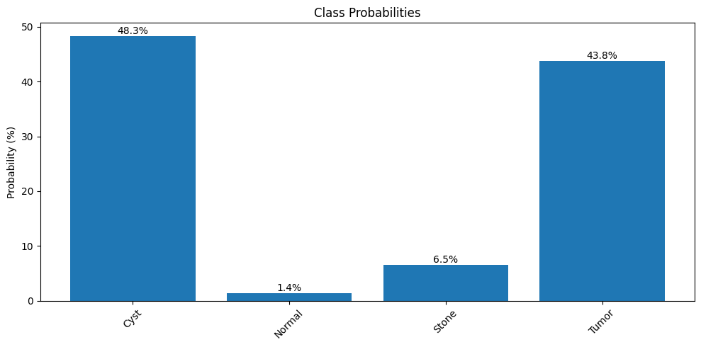
Figure 6: Probability distribution for sample prediction
Model Architecture: ├── Input Layer (224x224x3) ├── Convolutional Blocks │ ├── Block 1: Conv2D(32) → BatchNorm → MaxPool → Dropout(0.25) │ ├── Block 2: Conv2D(64) → BatchNorm → MaxPool → Dropout(0.25) │ ├── Block 3: Conv2D(128) → BatchNorm → MaxPool → Dropout(0.25) │ └── Block 4: Conv2D(256) → BatchNorm → MaxPool → Dropout(0.25) ├── Dense Layers │ ├── Flatten │ ├── Dense(512) → BatchNorm → Dropout(0.5) │ └── Dense(4) → Softmax └── Output: 4 classes
# Resize and normalize
img = cv2.resize(img, (224, 224))
img = img.astype('float32') / 255.0
# Apply CLAHE lab = cv2.cvtColor(img, cv2.COLOR_BGR2LAB) clahe = cv2.createCLAHE(clipLimit=3.0, tileGridSize=(8,8)) lab[...,0] = clahe.apply(lab[...,0]) img = cv2.cvtColor(lab, cv2.COLOR_LAB2BGR)
# Gaussian Blur img = cv2.GaussianBlur(img, (3,3), 0)
# Laplacian Edge Detection edges = cv2.Laplacian(img, cv2.CV_64F) img = cv2.addWeighted(img, 1, edges, 0.5, 0)
# Enable mixed precision training
tf.keras.mixed_precision.set_global_policy('mixed_float16')
# Optimize function calls
@tf.function(reduce_retracing=True)
def predict(self, image):
return self.model(image, training=False)
# Efficient data pipeline
dataset = tf.data.Dataset.from_tensor_slices((images, labels))
dataset = dataset.cache().shuffle(buffer_size).batch(batch_size).prefetch(tf.data.AUTOTUNE)
def preprocess_image(image_path, target_size=(224, 224)):
"""
Apply various image processing techniques:
1. Resize
2. Normalization
3. Contrast Enhancement
4. Noise Reduction
5. Edge Enhancement
"""
# Read image
img = cv2.imread(image_path)
img = cv2.cvtColor(img, cv2.COLOR_BGR2RGB)
# Resize
img = cv2.resize(img, target_size)
# Normalization
img = img / 255.0
# Contrast Enhancement using CLAHE
lab = cv2.cvtColor(img, cv2.COLOR_RGB2LAB)
l, a, b = cv2.split(lab)
clahe = cv2.createCLAHE(clipLimit=2.0, tileGridSize=(8,8))
cl = clahe.apply(l)
enhanced_img = cv2.merge((cl,a,b))
enhanced_img = cv2.cvtColor(enhanced_img, cv2.COLOR_LAB2RGB)
# Noise Reduction using Gaussian Blur
denoised_img = cv2.GaussianBlur(enhanced_img, (3,3), 0)
# Edge Enhancement using Laplacian
gray = cv2.cvtColor(denoised_img, cv2.COLOR_RGB2GRAY)
laplacian = cv2.Laplacian(gray, cv2.CV_64F)
laplacian = cv2.normalize(laplacian, None, 0, 1, cv2.NORM_MINMAX)
return denoised_img
img = cv2.imread(image_path) img = cv2.cvtColor(img, cv2.COLOR_BGR2RGB)
cv2.imread(): Loads image in BGR formatcv2.cvtColor(): Converts color spaceimg = cv2.resize(img, target_size)
img = img / 255.0
lab = cv2.cvtColor(img, cv2.COLOR_RGB2LAB) l, a, b = cv2.split(lab) clahe = cv2.createCLAHE(clipLimit=2.0, tileGridSize=(8,8)) cl = clahe.apply(l) enhanced_img = cv2.merge((cl,a,b)) enhanced_img = cv2.cvtColor(enhanced_img, cv2.COLOR_LAB2RGB)
denoised_img = cv2.GaussianBlur(enhanced_img, (3,3), 0)
gray = cv2.cvtColor(denoised_img, cv2.COLOR_RGB2GRAY) laplacian = cv2.Laplacian(gray, cv2.CV_64F) laplacian = cv2.normalize(laplacian, None, 0, 1, cv2.NORM_MINMAX)
Project Flow:
┌─────────────────┐ ┌─────────────────┐ ┌─────────────────┐ ┌─────────────────┐
│ Input Image │ ──► │ Image Processing │ ──► │ Deep Learning │ ──► │ Classification │
│ CT Scan │ │ Pipeline │ │ Model │ │ Result │
└─────────────────┘ └─────────────────┘ └─────────────────┘ └─────────────────┘
│ │
▼ ▼
┌─────────────────┐ ┌─────────────────┐
│ Enhancement & │ │ Prediction │
│ Preprocessing │ │ Confidence │
└─────────────────┘ └─────────────────┘
Input: Raw CT Scan
Enhanced: CLAHE Application
Denoised: Gaussian Blur
Enhanced: Edge Detection
Model Architecture Flow:
Input (224x224x3)
│
▼
Conv Block 1 (32 filters)
│ ├── Conv2D
│ ├── BatchNorm
│ ├── MaxPool
│ └── Dropout(0.25)
▼
Conv Block 2 (64 filters)
│ ├── Conv2D
│ ├── BatchNorm
│ ├── MaxPool
│ └── Dropout(0.25)
▼
Conv Block 3 (128 filters)
│ ├── Conv2D
│ ├── BatchNorm
│ ├── MaxPool
│ └── Dropout(0.25)
▼
Conv Block 4 (256 filters)
│ ├── Conv2D
│ ├── BatchNorm
│ ├── MaxPool
│ └── Dropout(0.25)
▼
Dense Layers
│ ├── Flatten
│ ├── Dense(512)
│ ├── BatchNorm
│ └── Dropout(0.5)
▼
Output (4 classes)
└── Softmax
The kidney disease classification project demonstrates excellent performance in automated medical image analysis. With an overall test accuracy of 91.93% and consistent performance across all classes, the system shows promise as a reliable tool for supporting medical professionals in kidney disease diagnosis.